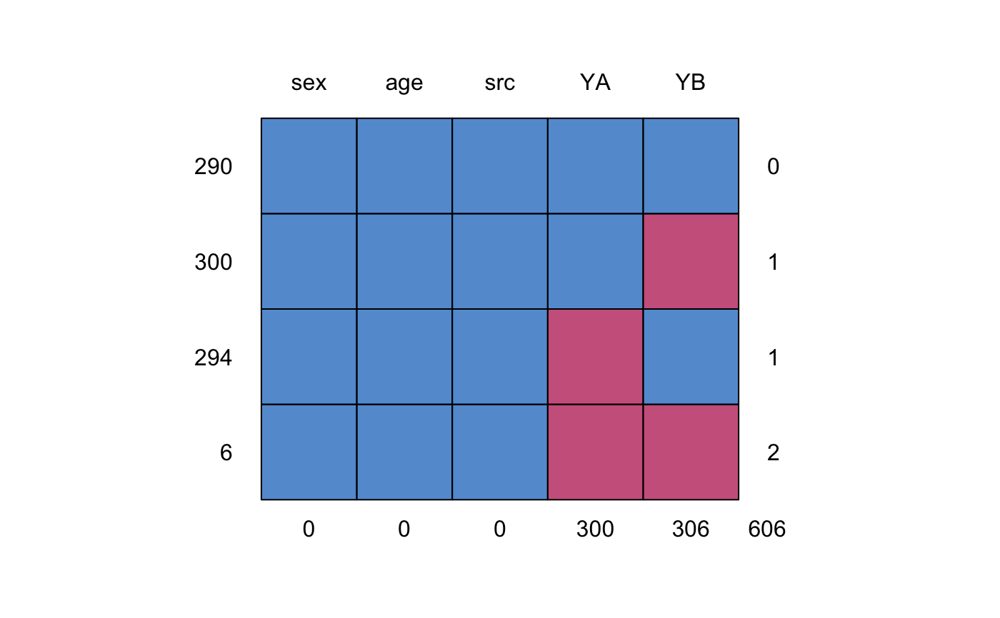

Two items YA and YB measuring walking disability in samples A, B and E.
A data frame with 890 rows on the following 5 variables:
Sex of respondent (factor)
Age of respondent
Item administered in samples A and E (factor)
Item administered in samples B and E (factor)
Source: Sample A, B or E (factor)
Example dataset to demonstrate imputation of two items (YA and YB). Item YA is administered to sample A and sample E, item YB is administered to sample B and sample E, so sample E acts as a bridge study. Imputation using a bridge study is better than simple equating or than imputation under independence.
Item YA corresponds to the HAQ8 item, and item YB corresponds to the GAR9 items from Van Buuren et al (2005). Sample E (as well as sample B) is the Euridiss study (n=292), sample A is the ERGOPLUS study (n=306).
See Van Buuren (2012) chapter 7 for more details on the imputation methodology.
van Buuren, S., Eyres, S., Tennant, A., Hopman-Rock, M. (2005). Improving comparability of existing data by Response Conversion. Journal of Official Statistics, 21(1), 53-72.
Van Buuren, S. (2018). Flexible Imputation of Missing Data. Second Edition. Chapman & Hall/CRC. Boca Raton, FL.
md.pattern(walking)#> sex age src YA YB #> 290 1 1 1 1 1 0 #> 300 1 1 1 1 0 1 #> 294 1 1 1 0 1 1 #> 6 1 1 1 0 0 2 #> 0 0 0 300 306 606micemill <- function(n) { for (i in 1:n) { imp <<- mice.mids(imp) # global assignment cors <- with(imp, cor(as.numeric(YA), as.numeric(YB), method="kendall")) tau <<- rbind(tau, getfit(cors, s=TRUE)) # global assignment } } plotit <- function() matplot(x=1:nrow(tau),y=tau, ylab=expression(paste("Kendall's ",tau)), xlab="Iteration", type="l", lwd=1, lty=1:10,col="black") tau <- NULL imp <- mice(walking, max=0, m=10, seed=92786) pred <- imp$pred pred[,c("src","age","sex")] <- 0 imp <- mice(walking, max=0, m=3, seed=92786, pred=pred) micemill(5)#> #> iter imp variable #> 1 1 YA YB #> 1 2 YA YB #> 1 3 YA YB #> #> iter imp variable #> 2 1 YA YB #> 2 2 YA YB #> 2 3 YA YB #> #> iter imp variable #> 3 1 YA YB #> 3 2 YA YB #> 3 3 YA YB #> #> iter imp variable #> 4 1 YA YB #> 4 2 YA YB #> 4 3 YA YB #> #> iter imp variable #> 5 1 YA YB #> 5 2 YA YB #> 5 3 YA YBplotit()### to get figure 7.8 van Buuren (2012) use m=10 and micemill(20)